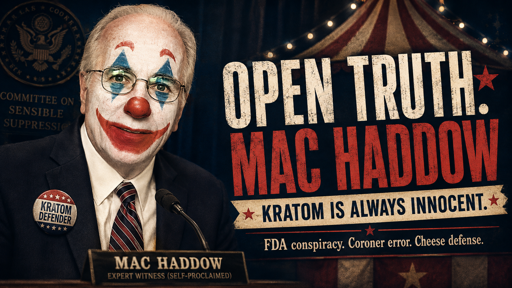

Mac Haddow has spent years traveling from legislature to legislature for the American Kratom Association.
Different states. Different evidence. Different deaths.
Same conclusion.
Kratom didn't do it.
Read enough Haddow testimony and you realize the evidence is almost incidental. Whatever happened, natural kratom will eventually emerge innocent.
Mac merely needs sufficient time to explain whose fault it actually was.
There is always another explanation. There is never another conclusion.
Haddow describes FDA's position as a "decades long crusade" and says its kratom policy isn't based on science.
Medical examiners?
Haddow says they follow FDA's "narrative" and mischaracterize kratom deaths. hawaii_testimony_mac.PDF
FAERS?
He calls FDA's adverse-event reporting system a "disinformation" database. hawaii_testimony_mac.PDF
Quite a collection of incompetents.
The federal regulator doesn't understand kratom.
Medical examiners don't understand kratom.
Coroners don't understand kratom.
The federal adverse-event database is apparently worthless.
Fortunately, the kratom lobbyist remains infallible.
There is confidence.
Then there is telling the people who performed the autopsy that they don't understand the death.
In Rhode Island, Haddow emphasizes that 94% of Utah's kratom-associated overdoses involved another substance.
Useful statistic.
Unfortunately, the Utah medical examiner Haddow himself quotes keeps talking:
Well.
Kratom only.
Surely kratom can finally make the list of possibilities.
Nope.
Haddow immediately attributes the increase to 7-OH. rhode_island_testimony_mac.pdf
So now we understand the rules:
There is apparently no number of other drugs, including zero, that produces the answer "kratom."
That's impressive.
Today it's concentrated 7-OH.
In Ohio in 2022, Haddow had different villains. He blamed dangerous addictions and overdose deaths "not [on] pure kratom" but on adulterants including fentanyl, heroin and morphine. ohio_testimony_mac.pdf
Then it was fentanyl.
Now it's 7-OH.
Next year, presumably, we'll receive an update.
The explanation changes. Kratom remains immaculate.
It is apparently powerful enough to relieve pain, improve mood, replace opioids and transform lives, yet has spent years surrounded by adverse events and deaths through a truly astonishing run of bad luck.
Eventually Haddow reaches cheese.
Yes. Cheese.
Haddow invokes dairy-derived casomorphins while arguing that opioid-receptor activity alone doesn't justify restricting kratom. rhode_island_testimony_mac.pdf
His narrow point is fair. Receptor interaction alone doesn't determine the overall danger of a substance.
But nobody is concerned about kratom solely because somebody discovered a receptor.
We're discussing psychoactive effects, tolerance, dependence, withdrawal, adverse events and deaths.
Nevertheless, Mac has brought dairy into it.
When a public-health argument reaches the cheese counter, perhaps we've learned everything we needed to know.
This may be the cleanest example of Haddow's method.
Haddow quotes NIDA Director Nora Volkow saying kratom constituents "could be of value potentially" for pain and addiction and emphasizing the importance of research. rhode_island_testimony_mac.pdf
Then Haddow writes:
Read those together.
Where did the additional certainty come from?
Mac.
NIDA didn't say it.
Mac said NIDA's "message" was it.
That's a rather generous translation service.
Then Haddow says FDA research:
Proves.
His own testimony describes 40 participants and acknowledges nausea, vomiting, somnolence, pupillary constriction and increased "drug liking" at the highest dose. rhode_island_testimony_mac.pdf
And Mac has reached "proves."
Apparently clinical pharmacology has been overcomplicating things.
The remarkable thing about Mac Haddow isn't simply what evidence he accepts.
It's how much evidence he suddenly requires depending on which direction it points.
Evidence that kratom helps someone?
Evidence that kratom hurts someone?
Now everybody put on your lab coats.
The standard of proof rises and falls with almost perfect sensitivity to whether kratom is winning.
And that's the absurdity at the center of Haddow's testimony.
Most pharmacologically active substances have benefits and risks.
Mac's kratom has benefits and explanations.
So perhaps legislators can save themselves the next ten pages and ask him one question:
Not fentanyl.
Not adulteration.
Not concentrated 7-OH.
Not FDA bias.
Not a mistaken medical examiner.
Not an inadequate database.
Not Gouda.
Kratom.
If there is an answer, let's hear it.
If there isn't, the rest is paperwork.
The documents below are presented so readers can review Haddow's statements in their original context. Descriptions summarize the contents; readers are encouraged to examine the underlying records directly.